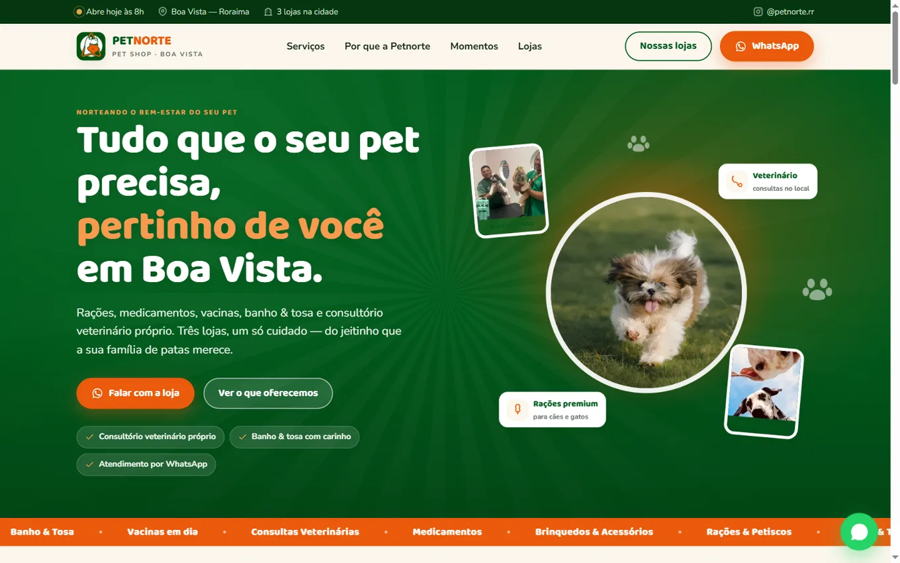
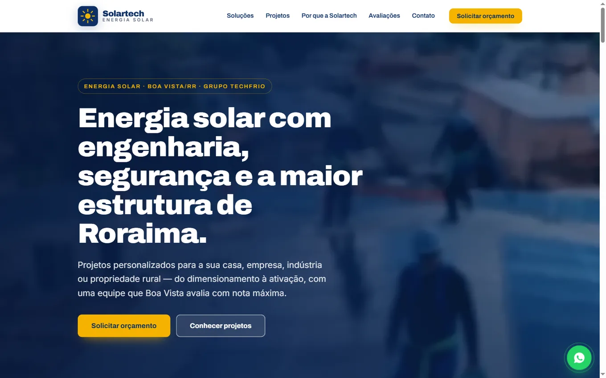
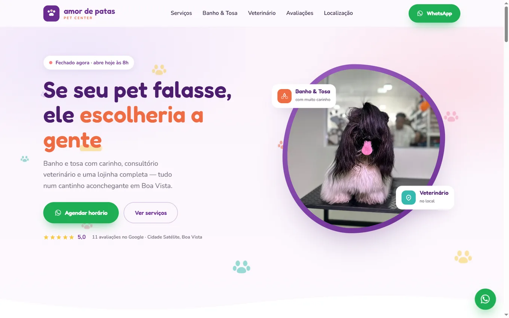
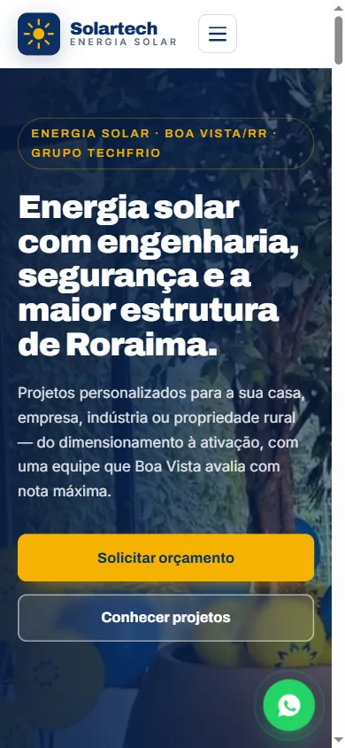
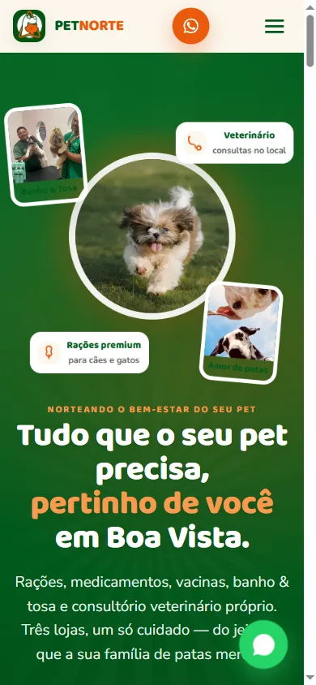
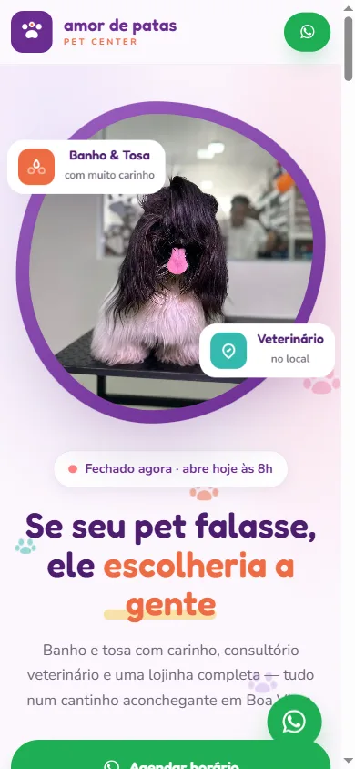

Energia solar
Solar Tech
Uma presença digital moderna e profissional para apresentar soluções de energia solar de forma clara e facilitar o contato de potenciais clientes.
Ver projetoEstúdio de criação de sites & landing pages
Criamos sites e Landing Pages profissionais que transformam visitas em oportunidades de negócio e posicionam sua empresa com mais autoridade no digital.
Projetos personalizados • Responsivos • Pensados para o seu negócio




Experiências digitais desenvolvidas para apresentar empresas de forma profissional, clara e estratégica.
Uma presença digital moderna e profissional para apresentar soluções de energia solar de forma clara e facilitar o contato de potenciais clientes.
Ver projetoUma experiência digital criada para fortalecer a presença da marca e apresentar seus serviços de forma moderna, acessível e profissional.
Ver projeto
Um projeto pensado para transformar a identidade do negócio em uma presença digital moderna, acolhedora e fácil de navegar.
Ver projeto
Muitos negócios têm Instagram e WhatsApp, mas não têm um espaço profissional próprio para apresentar a empresa, os serviços, os diferenciais e o contato — tudo organizado em um só lugar.
Enquanto o Instagram apresenta seu conteúdo, seu site apresenta sua empresa.
É nele que seu potencial cliente encontra seus serviços, diferenciais, informações e formas de contato — em um ambiente criado exclusivamente para o seu negócio.
Quero fortalecer minha presença digitalCada projeto é desenvolvido pensando em como seu cliente conhece sua empresa, entende seus serviços e chega até o contato.
Interfaces modernas desenvolvidas de acordo com a identidade do negócio.
Experiência pensada para quem acessa através do smartphone.
Informações organizadas para facilitar a compreensão dos serviços e o contato.
Sites rápidos, responsivos e desenvolvidos para uma ótima experiência de navegação.
Vamos construir uma presença digital à altura da sua empresa?
Quero um site para minha empresaPara empresas ou profissionais que precisam apresentar uma oferta, serviço ou campanha com foco em uma ação específica.
Para empresas que precisam apresentar serviços, diferenciais, informações e canais de contato de maneira profissional.
Estruturação da presença digital: site, integração com WhatsApp, configuração técnica básica e orientação para o Google quando aplicável.
Você acompanha todo o processo pelo WhatsApp.
O investimento depende da estrutura e das necessidades de cada projeto. Entre em contato com a M7 e fazemos uma avaliação do seu negócio para indicar a solução mais adequada.
O prazo depende da complexidade do projeto. Assim que entendemos exatamente o que a sua empresa precisa, informamos uma estimativa realista para a entrega.
Sim. Todos os projetos são desenvolvidos considerando desktop, tablet e dispositivos móveis, com atenção especial à experiência no celular.
Não necessariamente. A M7 orienta você sobre o domínio durante o processo, seja para registrar um novo ou usar um que você já tenha.
Sim. O projeto pode ser publicado no domínio próprio da sua empresa.
Os ajustes previstos no projeto são feitos durante a etapa de revisão. Alterações posteriores podem ser avaliadas conforme a necessidade.
O site pode ser preparado tecnicamente para indexação e boas práticas de SEO. O posicionamento, porém, depende de vários fatores e não existe garantia automática de primeira posição.
Transforme sua presença online em uma experiência profissional que represente o verdadeiro valor da sua empresa.
Quero um site para minha empresaSem compromisso • Atendimento pelo WhatsApp